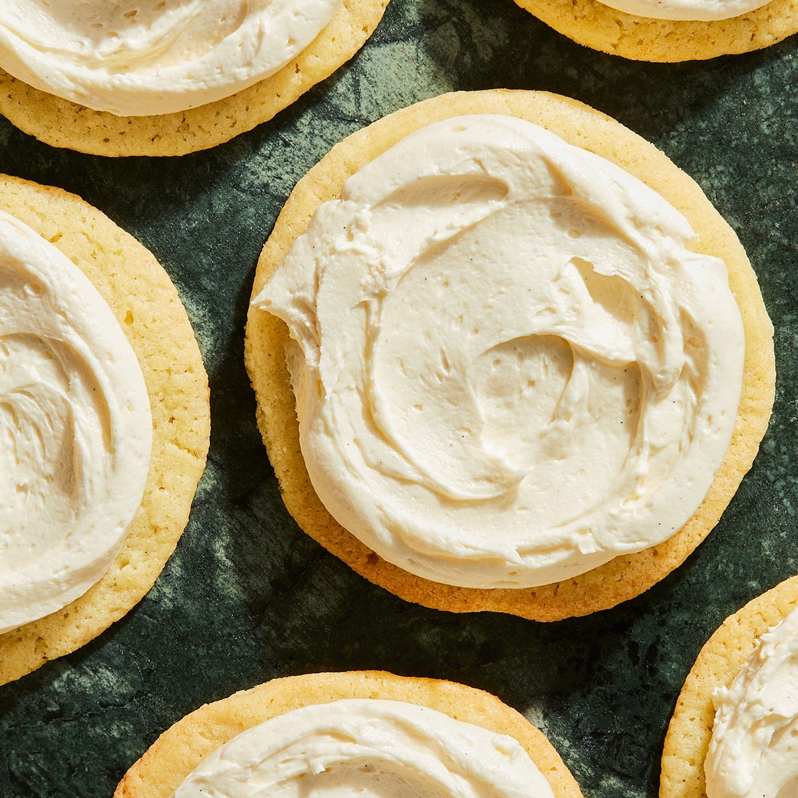

Butter Cream Frosting

A sweet and creamy frosting for your sugar cookies.
Ingredients
- 1 lb. box of powdered sugar
- 1/4 cup milk
- 1 tsp. vanilla extract
- 1 stick salted butter (softened)
Steps
- Beat with electric mixer 2 minutes scraping bowl often
- Add food dye coloring of your choice.
- For thinner consistency, add milk a little at a time.